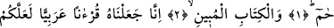
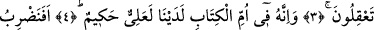
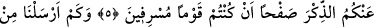
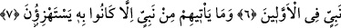
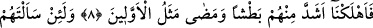
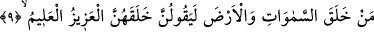
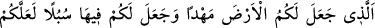
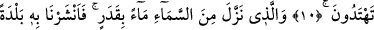
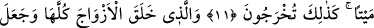
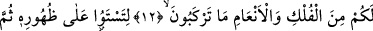
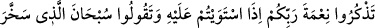
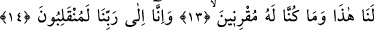
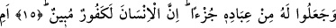
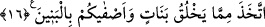
GÖKTEN
BİR ÖLÇÜYE GÖRE
SUYU İNDİREN
O’DUR
Bismillâhirrahmânirrahîm
1. Hâ. Mîm.
2. Apaçık Kitab’a andolsun ki
3. Biz, anlayıp düşünmeniz için onu Arapça bir Kur’an kıldık.
4. O, katımızda bulunan Ana Kitap’ta (levh-i mahfuzda) mevcut, yüce ve
hikmetle dolu bir kitaptır.
5. Siz, haddi aşan kimseler oldunuz diye, sizi Kur’an’la uyarmaktan vaz mı
geçelim?